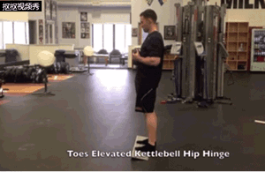
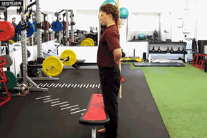
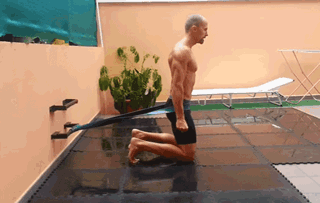

硬拉是一个髋关节主导的动作，膝关节参与并不多，很多人却常常在进行硬拉训练时出现膝关节过
多前移（参与过多）的现象，硬生生把硬拉变成“深蹲”的动作
其实不只是硬拉，所有髋关节主导的动作（早安式，荡壶玲，俯身划船等等）都需要控制膝关节的
角度（不要过多弯曲）
今天要给大家带来三个不错的小技巧来帮助你去寻找髋主导的感觉，改善膝关节参与过多的现象！
1.踩住木板或杠铃片进行髋关节铰链的动作！

踩着木板或杠片，让脚尖垫高，目的是让脚踝几乎无法再进行背屈(Dorsiflexion)，锁死踝关节，所
以膝盖没办法再往前推了。这时候再来找“髋关节铰链”的动作感觉。
2.凳子顶住膝盖，让膝盖没办法向前推

这是一个外部注意力提示，利用凳子或箱子，至于膝关节前方，强迫限制膝盖往前（屈），让你的
髋关节主导;
3.跪姿弹力带髋屈伸

跪姿限制了膝盖参与的幅度！减少大腿前侧的参与！让你体会基础的伸髋力量！感受臀部发力！
同时，在髋关节套上一条弹力带！弹力带特有的阻力会引导你非常自然的屈髋！
采用跪姿，把弹力带的一端绑在固定物上，高度越河髋关节同高！跪在垫子上，膝盖和双腿在同一
条线上（避免内八）
臀部往后坐，屈髋俯身至躯干和地面成45度夹角，感受到臀部被拉伸！